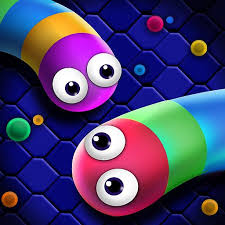
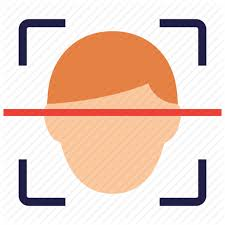

<mat-toolbar color='primary'>Mini projects</mat-toolbar>
<div class='container' fxLayout="row" fxLayoutAlign="flex-start center" fxLayoutGap="30px">
  <mat-card (click)='navigate(1)'>
    
    <mat-card-content>Snake game</mat-card-content>
    <mat-card-actions>game</mat-card-actions>
  </mat-card>
  <mat-card>
    
    <mat-card-content>Image recognition</mat-card-content>
    <mat-card-actions>machine learning</mat-card-actions>
  </mat-card>
  <mat-card>
    
    <mat-card-content>Coronavirus tracker</mat-card-content>
    <mat-card-actions>Web services</mat-card-actions>
  </mat-card>
</div>
